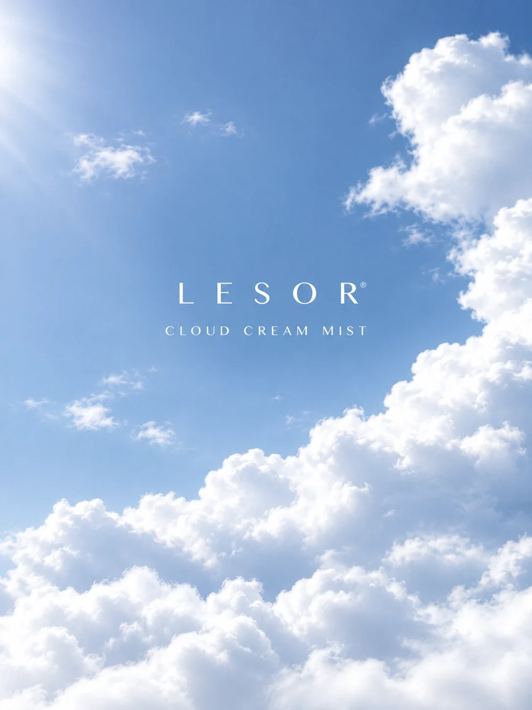
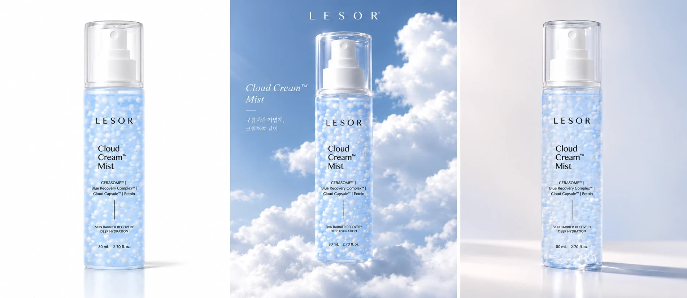

THE MIST COLLECTION
Two mists,
one belief.
가볍게 뿌리는 한 번에도 기준은 같습니다. 해돋이의 빛을 담은 미스트와 구름의 결을 담은 미스트, 두 가지 방식으로 촉촉함을 전합니다.

CHOOSE YOUR MIST
Light, in two ways.
레이어가 섞이는 윤기, 혹은 크림 캡슐의 촉촉함. 피부가 원하는 쪽을 고르세요.


A closer look
SUNRISE GLOW / CLOUD CREAM

